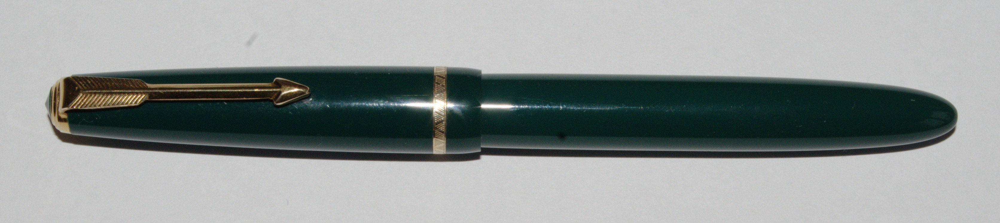
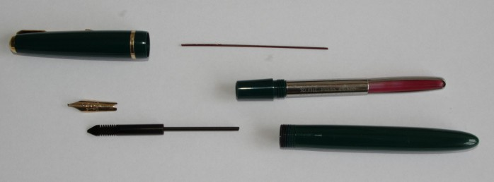
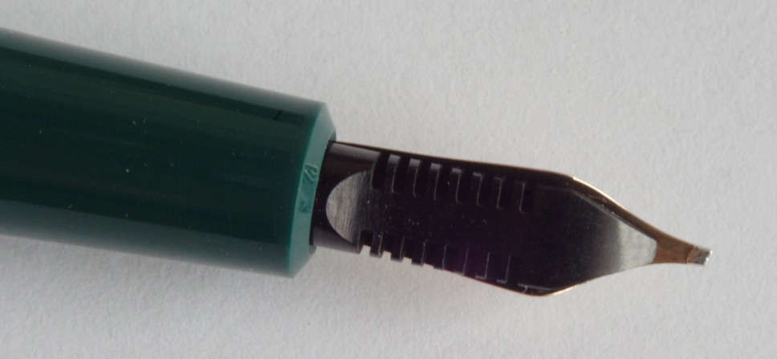
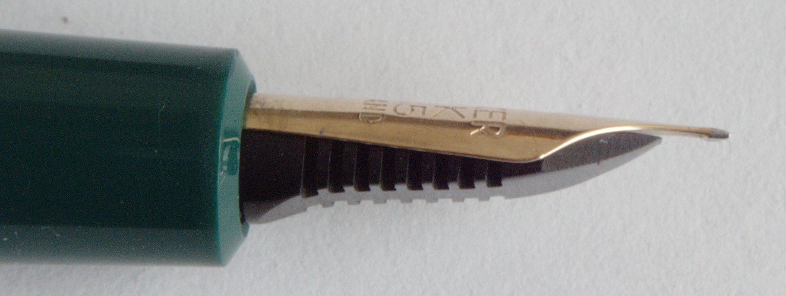
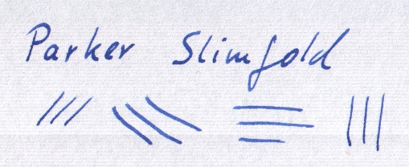

Parker Slimfold javítás
Egy hatvanas években gyártott Parker Slimfold szerelését mutatom be az oldalon. A tollat Andy's Pens-től vettem, ahol igen nagy számban lehet régi töltőtollakat beszerezni. Vélhetően a szállítás közben mozdult el a hegye, ezért nem írt rendesen.
{kind=link}
Korának megfelelően a tollhoz nem használhatunk tintapatront, beépített tintatartálya van, a hegyen keresztül tudunk tintát felszívni egy pumpa segítségével (a régi töltőtollak változatos feltöltési módjairól itt olvashatunk). A toll hegye: oblique medium 14K. Vagyis 14 karátos ferde aranyhegy, közepes vonalvastagsággal.
Figyelmeztetés
Mielőtt nekiállnál szétszerelni a töltőtollad:
- Az, hogy a töltőtollam szereléséről írok, nem jelenti, hogy értek is hozzá, szóval csak saját felelősségedre állj neki.
- Egy viszonylag olcsó tollnál érdemes kísérletezni, de egy drágább tollat inkább szakértőre bíznék.
- A problémák egy része orvosolható szerelés nélkül, ha más (eltérő viszkozitású) tintát használunk, esetleg újfajta papírt.
- Ha a tinta beleszáradt a tollba, akkor a toll alapos tisztítása többnyire megoldja a gondot.
Tisztítás
Akár szereléssel, akár anélkül oldjuk meg a problémát, az első lépés az alapos tisztítás. A tisztításhoz két dolog szükséges: víz és türelem. Elég sokan javasolják különféle adalékanyagok (pl. szalmiákszesz) használatát, de legalább ugyanennyien figyelmeztetnek ennek veszélyére. A tisztításhoz én tiszta vizet használok, folyamatosan cserélve, ahogy a beszáradt tinta kioldódik.
A tisztításhoz használt víz ne legyen forró, mert árthat a tollnak. (Én szobahőmérsékletűt használok, többen a meleget javasolják.)
Alkatrészek
A következő képen a szétszedett toll alkatrészei látszanak.
A kupak leszedése után jön a legnehezebb lépés a hegy (nib, az ábrán balra arany színnel) és a tintaadagoló (feed, az ábrán alatta, fekete színnel) szétszerelése. Ehhez létezik célszerszám is (nekem nincs), enélkül a két alkatrészt együtt megfogva és óvatosan mozgatva előbb-utóbb (inkább utóbb) kicsúsznak a tolltestből. A heggyel nyilván óvatosan kell bánni.
{kind=link}
{kind=link}
A tolltestből kivehető egy műanyag rudacska is (a fenti képen felül a legvékonyabb alkatrész). Nem tudom ennek mi a neve, a tinta felszívásakor van fontos szerepe, ne felejtsük ki az összeszereléskor.
A hegy beállítása
Ha sikerült a tollat apró darabokra szedni, akkor alaposan megtisztíthatjuk az alkatrészeket, és lehet nekiállni az összeszerelésnek. A legtöbb alkatrészt nem tudjuk rossz helyre szerelni, a legfontosabb amire oda kell figyelni az a hegy és a tintaadagoló egymáshoz viszonyított pozíciójának beállítása.
A szimmetriára nyilván oda kell figyelnünk, de az is nagyon fontos, hogy a két alkatrész között éppen a megfelelő vastagságú legyen a hézag. Valahol azt olvastam, az a jó, ha a két alkatrész közé még éppen becsúsztatható egy papírlap, de a papír szorul amikor becsúsztatjuk. A kiszereléshez hasonlóan a két alkatrészt összefogva szoríthatjuk be őket a tolltestbe. Ha már rögtön látszik, hogy elrontottuk, akkor szereljük ki újra. Ha jónak tűnik, akkor tintát felszívva ellenőrizhetjük sikerült-e eltalálni a megfelelő pozíciót. Ha nem, akkor újra jöhet a tisztítás, szétszerelés, összeszerelés.
 {kind=link}
{kind=link}
A fenti módszer igazából csak akkor működik, ha a két alkatrész csak elcsúszott egymáshoz képest, de az alakjukkal minden rendben van, szépen illeszkednek egymáshoz. Ha nagyobb a baj, akkor állítólag forró vízbe kell mártani a tintaadagolót és a hegyet 10-15 másodpercre, amitől az adagoló kellően rugalmas és formálható lesz. Ezt még sosem próbáltam.
Írásminta
Ha minden jól ment, ki tudjuk próbálni a tollat, és ellenőrizhetjük a vonalvastagságot is:
